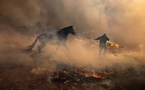

【假新聞糾察隊】看圖說故事，就你在搞事
圖文製作: 林芸秀

近年來，社群用戶認知能力降低，無法快速辨別真假訊息，導致假訊息傳播的更快更廣。其中，透過圖片呈現的假消息相較文字訊息，傳播地更快速且不易查證。
不實圖片呈現方式包含合成及時間不相符的誤導照片，下列舉出澳洲大火期間的兩大相片誤傳事件。
＃歷年火災數據圖被瘋傳，網友誤以為是澳火情勢地圖
2020年澳洲大火，知名藝人Rihhana（蕾哈娜）在twitter 發文，打下「devastating ＃Australia」為澳洲大火發聲並附上「澳洲火災情勢地圖」，此篇文在推特上被轉載高達77,000次，引起全球相當高的關注。
（圖片來源：擷自Rihanna推特）殊不知，這張被高度轉載的圖片並非「火災情勢地圖」，而是透過美國太空總署（NASA）數據製作的「澳洲野火3D數據圖」。是由一位名為Anthony Hearsey（赫爾西）的藝術家所製作。赫爾西也在Instagram 發文表示：此圖片並非澳洲大火災情的原始相片，而是歷年來澳洲曾發生火災的數據圖。
（圖片來源：擷自Anthony Hearsey Instagram）
＃跨越時空的逃難? 工人被誤認為澳火受害者
澳洲大火發生期間，圖片誤傳事件頻頻發生。像是（下圖）網路上出現一張人馬逃離著火森林的照片，大部分人光看圖片就以為此圖拍攝於澳洲火災期間。然而，經過相片反向搜尋驗證後，其實他是在2019年10月美國北加州大火所攝。為加州靠近錫米谷的牧場工人帶著馬逃離火場的照片，並非網友認為的澳洲大火。
（圖片出自：BBC）
上面這些錯誤情境的相片，雖然不是人為惡意製圖所生，卻也是造成恐慌的一種方式。尤其在大火、地震、颱風...等天災人禍時，就算拍攝時間、地點不符合當時狀況，閱聽人會因畫面和情境相似而誤信。再加上社群擴散的力量，讓尚未查證的錯誤資訊誤導更多社群使用者。
（圖片截自/三立新聞台）
另外，日漸進步的合成技術也可產出擬真的捏造圖片，讓無防備心的閱聽人/消費者無法辨別真偽。合成技術也成為販賣假商品、傳遞錯誤資訊的低成本好方法，以下會介紹兩種合成圖片的假新聞種類，帶你破除假資訊：
＃川普和金正恩曬恩愛？合成圖以假亂真，傻傻分不清楚
印度知名攝影師 阿甘．哈瑞哈普(Agan Harahap) 經常在個人Instagram上發布「創造」的假照片。2018年06月19日，哈瑞哈普發布了川普和金正恩當街親吻以示友好的相片，為了諷刺政治，以達到政治娛樂的效果。
哈瑞哈普製作誇大合成照不只是為了引起網友注意，也想加強宣導「別輕易相信圖片，必須閱讀內文、多方查證」。
（擷自Agan Harahap 的 Instagram貼文)
這樣的Kuso合成相片，在具有媒體素養的閱聽人看來只是一張娛樂大眾的相片，並不會獨斷相信此事屬實。但若今天有心人士蓄意用合成技術捏造事實，就算有媒體素養也難以分辨真偽。 若是某張川普按按鈕的照片，被有心人士合成為「按下發射導彈的照片」，很可能會被新聞媒體、網友作為話題轉載分享在社群媒體上，甚至引起國際恐慌。
＃颶風肆虐，鯊魚游進市區？P圖造假引起社會恐慌
2012年桑迪颶風肆虐美國，不只造成100多人喪命，也損失高達750億美元。但是在颶風期間，網路上流傳了多張鯊魚出沒在市區、住家的照片，引起社群的轉傳熱潮。經過驗證後，這些鯊魚出沒市區的照片皆為後製，才結束了這場鬧劇。
（截自Twitter： For a Better World ）
合成技術日新月異，甚至連專業的修圖者都無法快速分辨曾遭修圖的圖片。除了上述天災的案例，合成圖片更常被用在造假商品照來做網路詐欺、媒體合成聳動圖片誇大內容造成恐慌。
＃相片合成那麼多，怎麼分類才清楚？
在假資訊氾濫的時代，具備辨別真假訊息的媒體素養是身為閱聽人的基本能力。到底該如何避免自己被造假圖片欺騙呢？以下提供四步驟教你破解網路合成、造假照片，讓你不再輕易受騙。
＃四步驟破解合成假照片
1. 對資料保持懷疑態度，不輕易相信
面對任何新聞圖片、商品照都必須抱持懷疑態度，在尚未確認資訊來源前轉載、分享，會加快假消息在社群擴散的速度。
2. 確認相片基本資訊（拍攝時間、拍攝者、拍攝地點）
避免被錯誤情境的相片誤導，必須確認相片拍攝時間、拍攝者、拍攝地點...等資訊，確認相片是否與情境相符。除了確認情境和資訊外，相片畫面也必須仔細確認，若圖片有切割痕跡、畫面重疊、無法銜接的畫面出現，必須注意此圖是否為合成圖片。
3. 多方查證，是否有其他報社發布相關新聞
若圖片與議題相關，可上網查詢是否有相關新聞報導，透過多方查證確認資訊是否屬實。網購時必須貨比三家，確認商品照有無修圖或合成痕跡、價格是否太過便宜、賣家資訊是否完整，避免被造假的商品照詐騙。
4. 利用查證資料-反向圖片搜索
- 下載想查證的照片或複製相片連結
- 點選搜尋欄的相機圖片，將電腦、手機內的相片放上網路搜尋
- 按下搜尋
- Google 跳出顯查證結果
Google反向圖片搜索的功能雖然能協助你查詢相片資訊，但並非百分之百正確，還須透過多方驗證才能清楚相片是否為真。目前網路上還有許多反向圖片搜索的工具，像是TinEye 、Yandex、Forensically，讓你透過不同工具多方驗證。
5. 尋求專家協助（台灣資源）
【MyGoPen】
取自別再騙的台語「麥擱騙」，為了打擊網路謠言、詐欺和不實消息而建立的網站。除了網站分享文章也有建立Line＠帳號，讓用戶可將資訊轉傳給MyGoPen查證。
【Cofacts 真的假的】
Cofacts 是一個專門打擊 Line 不實謠言的聊天機器人，用戶只要加入 Cofacts 好友、把想要查證的訊息整篇轉傳給 Line Bot，機器人便會進入「謠言資料庫」協助闢謠。由群眾的力量更新謠言資料庫，任何人都可以查證、回應別人的謠言或訊息，大家都可以為闢謠盡一份心力。
點我看參考資料